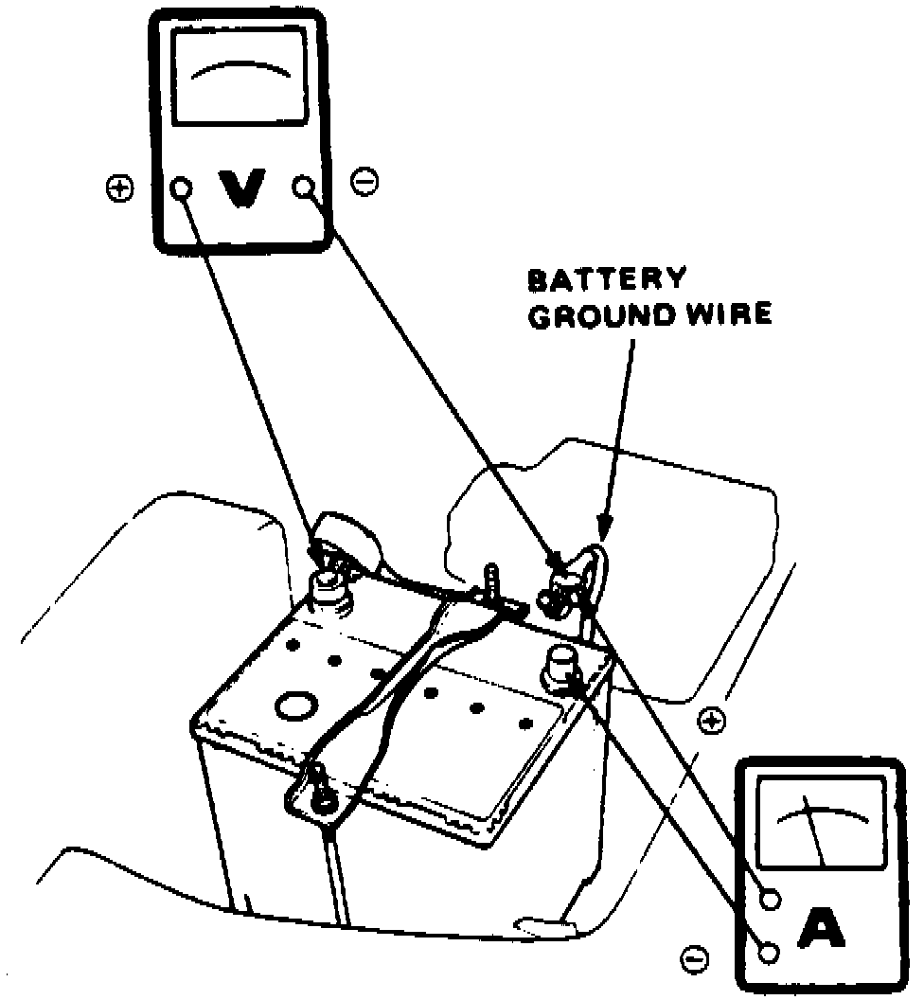
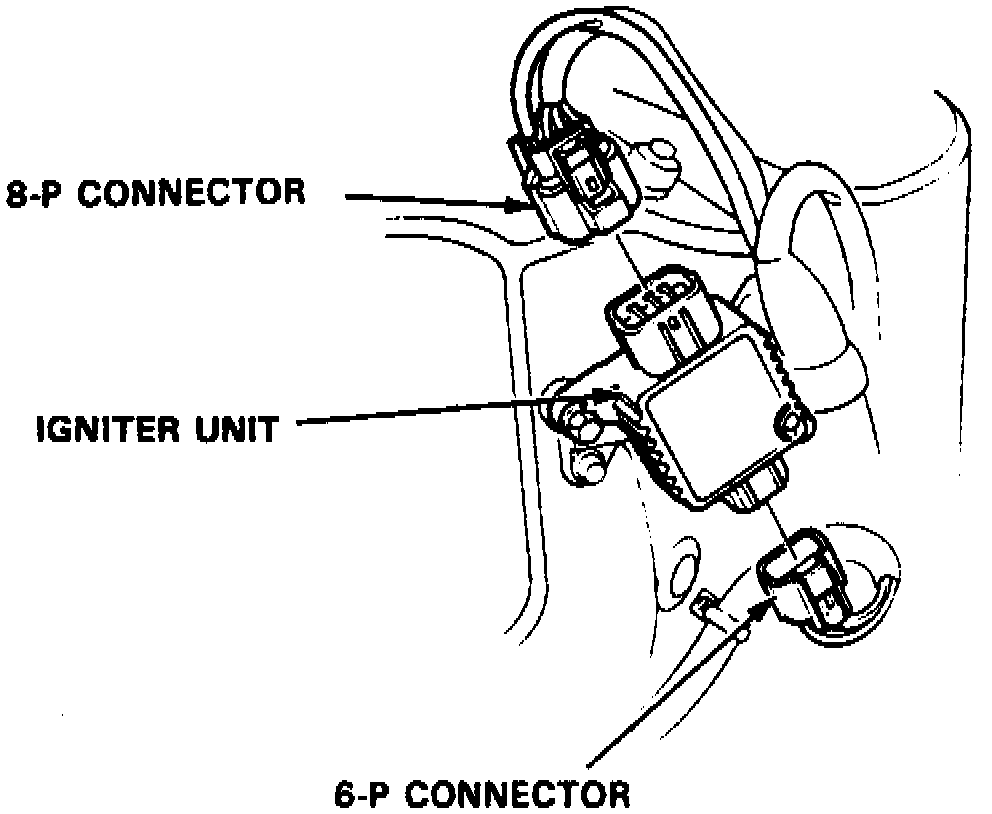

Without Starter System Tester
The air temperature must be 59-100°F before testing.Fig. 6 Starter Test Equipment Connections:

1. Install suitable ammeter, voltmeter and tachometer as shown in
Fig. 6.
Fig. 10 Ignition Control Module Connectors:

3. Disconnect igniter unit six and eight pole connectors, Fig. 10.
4. Turn ignition switch to Start position, starter should crank.
5. If starter does not crank, check battery, positive battery cable, ground and electrical connections for looseness or corrosion, then repair and retest.
6. If starter still does not crank, proceed as follows:
a. Disconnect starter solenoid (BLK/WHT wire) electrical connector.
b. Connect suitable jumper wire between positive battery terminal to solenoid terminal.
c. Starter should crank.
7. If starter still does not crank, remove starter and diagnose internal problem.
8. If starter cranks, check for open in BLK/WHT wire between starter and ignition switch, then check ignition switch.
9. On models with automatic transaxle, check neutral safety switch and connector.
10. On models with manual transaxle, check starter relay, clutch interlock switch and electrical connector.
11. Check starter cut relay and security alarm system, if equipped.
12. If starter engages but engine cranks erratically, remove starter motor, then inspect starter drive gear and flywheel ring gear for damage. Check overrunning clutch for binding or slipping when armature is rotated with drive gear held.
13. Cranking voltage should be no less than 8.5 volts.
14. Current draw should be no more than 350 amperes.